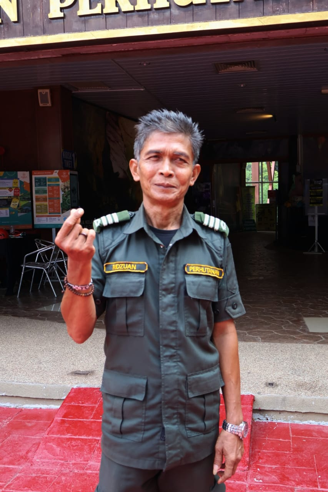

My name is Mr. Ridzuan, and I have been working as a forestry officer at Gua Kelam for 23 years.
My main responsibility is to ensure the safety of the forest and cave areas, as well as monitor visitors to ensure they follow the rules.
I have a strong interest in nature and at the same time want to ensure public safety.
